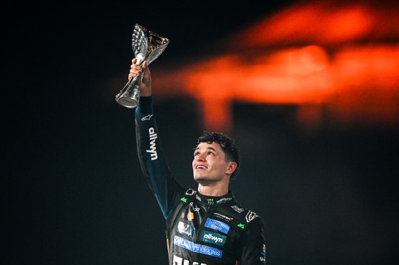
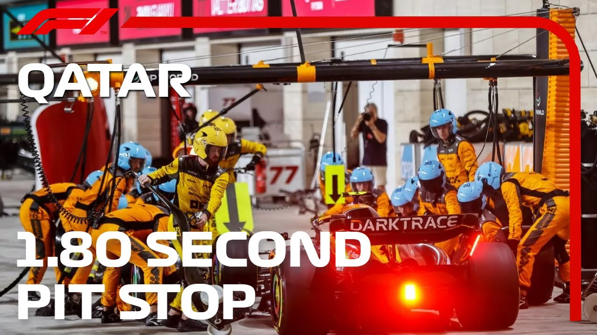
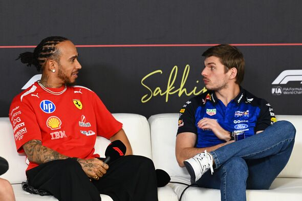

Bevezetés
A Formula–1 ( F1 ) a Formula–1 Csoport által szervezett és a Nemzetközi Automobil Szövetség (FIA) által jóváhagyott, nyitott karosszériás, együléses formula versenyautók legmagasabb szintű világméretű versenysorozata. Az FIA Formula – 1 Világbajnokság az 1950 -es indulása óta a világ egyik legfontosabb motorsport- formula , és gyakran a motorsport csúcsának tekintik. A névben szereplő „formula” szó azokra a szabályokra utal , amelyeket minden résztvevő autónak be kell tartania. Egy Formula–1-es szezon versenyek sorozatából áll, amelyeket Grands Prix- nek neveznek . A Grands Prix-ket több országban és kontinensen rendezik, erre a célra épített pályákon vagy lezárt utakon.
Jelenlegi bajnok
Lando Norris
McLaren

Története
A Formula–1 a gyártók világbajnokságából ( 1925–1930 ) és az egyéni versenyzők Európa-bajnokságából ( 1931–1939 ) ered . A formula egy szabályrendszer, amelyet minden résztvevő autójának be kell tartania. A második világháború előtt számos nagydíj - szervezet javasolta egy új bajnokság létrehozását az Európa-bajnokság helyett, de a versenyzés felfüggesztése miatt a konfliktus miatt az új nemzetközi autóformula csak a háború után vált hivatalossá. A Formula–1 egy 1946 -ban elfogadott formula volt, amely hivatalosan 1947- ben lépett hatályba . Az új szabályok szerinti első nagydíj az 1946-os torinói nagydíj volt, amely a formula hivatalos kezdetét jelentette. Az új világbajnokság kezdetét 1950 -re tervezték.

Zászlójelzések
A bírók zászlókkal kommunikálnak a pilótákkal.
- Sárga - Veszély a pályán, előzni tilos!
- Piros - A versenyt megszakították.
- Kék - Engedd el a mögötted jövő gyorsabb autót!
- Kockás - A futam véget ért.
Versenyhétvége
- Péntek: Szabadedzések
- Szombat: Időmérő edzés
- Vasárnap: Futam
Érdekességek és rekordok
Villámgyors kerékcsere: A McLaren tartja a világrekordot, egy ízben mindössze 1,80 másodperc alatt cserélték le mind a négy kereket.
G-erők: A pilótákra kanyarodás közben akár 5-6 G erő is hathat, ami olyan, mintha a fejük súlya hirtelen az ötszörösére nőne.
A legsikeresebbek: Michael Schumacher és Lewis Hamilton osztozik a rekordon, mindketten 7-szeres világbajnokok.
Hőség a pilótafülkében: Egy forróbb versenyen a pilóták akár 3-4 kilogrammot is veszíthetnek a testsúlyukból a hőség és a fizikai megterhelés miatt.

Gyakori kérdések
